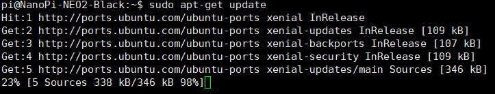

$ su root fa $ nmcli r wifi on //打开wifi $ nmcli dev //显示网络设备，无线网卡是wlan0 $ nmcli dev wifi //扫描wifi信号 $ nmcli dev wifi connect "SSID" password "PASSWORD" ifname wlan0 //连接无线网，SSID是无线网名称，PASSWORD是密码
$ sudo vim /etc/apt/sources.list //加入以下源 deb http://mirrors.ustc.edu.cn/ubuntu-ports/ xenial main multiverse restricted universe deb http://mirrors.ustc.edu.cn/ubuntu-ports/ xenial-backports main multiverse restricted universe deb http://mirrors.ustc.edu.cn/ubuntu-ports/ xenial-proposed main multiverse restricted universe deb http://mirrors.ustc.edu.cn/ubuntu-ports/ xenial-security main multiverse restricted universe deb http://mirrors.ustc.edu.cn/ubuntu-ports/ xenial-updates main multiverse restricted universe deb-src http://mirrors.ustc.edu.cn/ubuntu-ports/ xenial main multiverse restricted universe deb-src http://mirrors.ustc.edu.cn/ubuntu-ports/ xenial-backports main multiverse restricted universe deb-src http://mirrors.ustc.edu.cn/ubuntu-ports/ xenial-proposed main multiverse restricted universe deb-src http://mirrors.ustc.edu.cn/ubuntu-ports/ xenial-security main multiverse restricted universe deb-src http://mirrors.ustc.edu.cn/ubuntu-ports/ xenial-updates main multiverse restricted universe
有点慢，大家耐心等待（也可以是我的网慢）
执行更新命令
1 2
$ sudo apt-get update $ sudo apt-get upgrade

3.测网速
1 2 3 4 5 6 7 8 9 10 11 12
$ sudo apt install speedtest-cli //安装 $ sudo speedtest-cli //测试，有时可能测不出来 Retrieving speedtest.net configuration... Retrieving speedtest.net server list... Testing from China Mobile Guangdong (223.104.236.97)... Selecting best server based on latency... Hosted by ChinaMobile, Liaoning Branch,Dalian (Dalian) [247.24 km]: 75.654 ms Testing download speed........................................ Download: 2.42 Mbit/s Testing upload speed.................................................. Upload: 0.76 Mbit/s 我是热点连接，手机又被限速了所以很慢